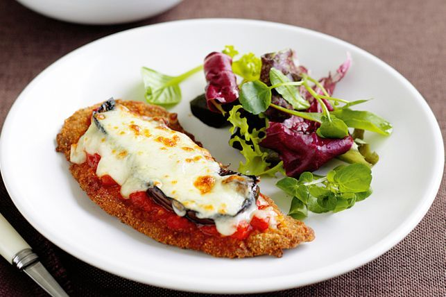

Steak Parmigiana

Description
Steak parmigiana is a classic Italian-American dish that is easy to make at home with simple ingredients. This dish is perfect for a quick and hearty meal that is sure to satisfy your everyone in the family. In this recipe, as it's for the holidays, we are using 4oz Filet Mignons as the star ingredient, topped with a scratch-made tomato sauce and melted mozzarella cheese. If you are ready to impress your family and friends with this mouth-watering dish, let's get started!
Ingredients
- 1/3 cup vegetable oil
- 4 (125g each) crumbed beef schnitzels
- 2/3 cup chargrilled vegetable pasta sauce
- 4 slices chargrilled eggplant
- 2/3 cup grated mozzarella cheese
- 100g salad leaves
Steps
- Line a baking tray with foil. Pour oil into a frying pan until 1cm deep. Heat pan over medium-high heat. Reduce heat to medium. Cook schnitzels, in batches, for 2 minutes each side or until golden. Transfer to prepared tray.
- Preheat grill on medium. Spread pasta sauce over each schnitzel. Top each with 1 slice eggplant. Sprinkle with cheese. Grill for 2 minutes or until cheese is golden and melted. Serve with salad leaves.
Return to home